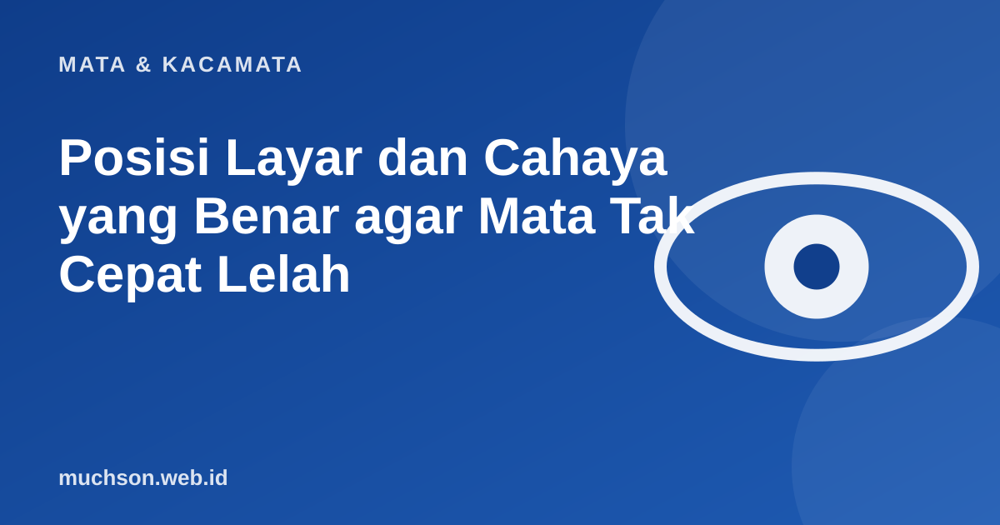

Beranda › Artikel › Mata & Kacamata
Mata & KacamataPosisi Layar dan Cahaya yang Benar agar Mata Tak Cepat Lelah
Banyak keluhan mata sebenarnya berasal dari meja kerja yang salah atur, bukan dari mata yang bermasalah. Memindahkan layar beberapa sentimeter dan menggeser lampu sering lebih terasa daripada membeli apa pun.

Gambaran meja kerja yang nyaman
Atur jarak dan tinggi layar
Layar yang terlalu tinggi membuat mata terbuka lebih lebar sehingga menguap lebih cepat, dan leher mendongak. Layar yang sedikit lebih rendah membuat kelopak menutupi sebagian permukaan mata, sehingga lebih lembap. Pada laptop, gunakan penyangga dan keyboard terpisah bila bekerja lama.
Silau dan cahaya ruangan
- Posisikan layar tegak lurus terhadap jendela, bukan menghadap atau membelakanginya.
- Gunakan tirai atau gorden tipis pada jam silau.
- Hindari lampu yang memantul langsung di layar.
- Cahaya ruangan sebaiknya mendekati kecerahan layar. Layar sangat terang di ruang gelap memaksa mata beradaptasi terus-menerus.
- Permukaan layar yang bersih juga mengurangi pantulan dan kabut.
Hitung ukuran huruf yang nyaman
Daftar periksa meja kerja
Tanya jawab
Berapa jarak ideal mata ke layar?
Sekitar 50 sampai 70 cm (satu lengan) untuk komputer. Ponsel biasanya dipegang lebih dekat, jadi jeda lebih penting.
Bolehkah layar sedikit lebih tinggi dari mata?
Sebaiknya jangan. Layar yang terlalu tinggi membuat mata terbuka lebar sehingga cepat kering. Sejajar atau sedikit di bawah lebih nyaman.
Apakah layar matte lebih baik?
Permukaan anti-silau mengurangi pantulan lampu dan jendela, sehingga bisa lebih nyaman di ruangan terang.